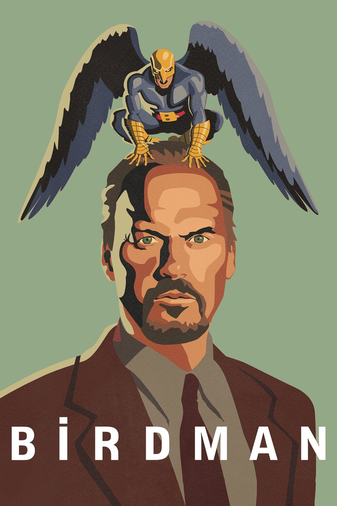
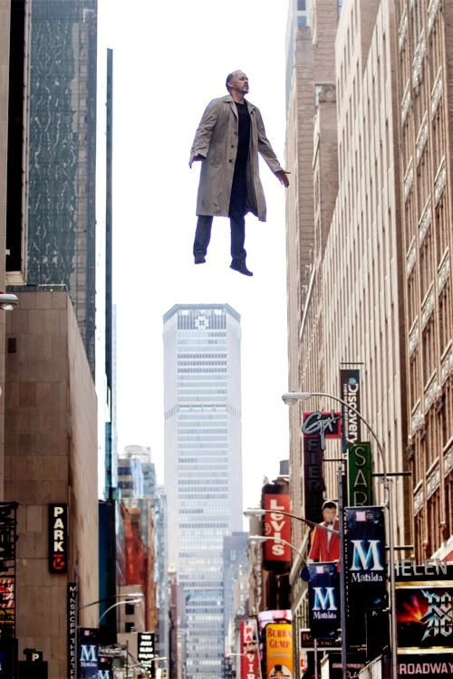
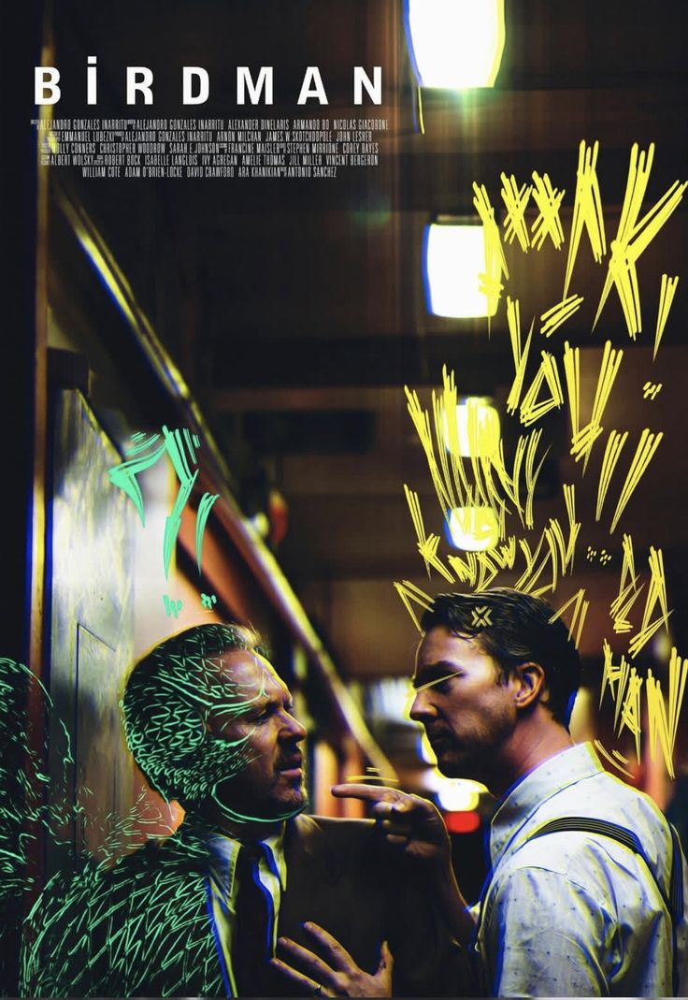

Comedy, Drama
2014
119 minutes
Alejandro G. Iñárritu
Birdman follows Riggan Thomson, a washed-up actor once famous for portraying the superhero Birdman, as he attempts to revive his career by directing and starring in a Broadway play. As opening night approaches, Riggan struggles with family, fame, and his own sanity while confronting the voice of the iconic character that made him famous.